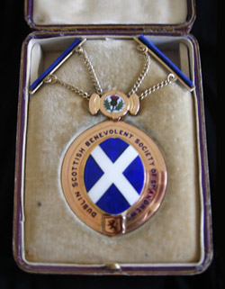
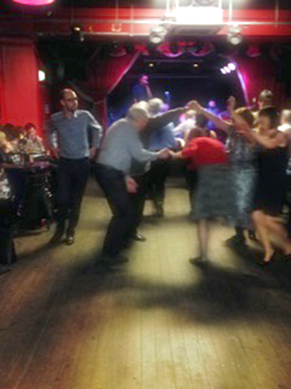
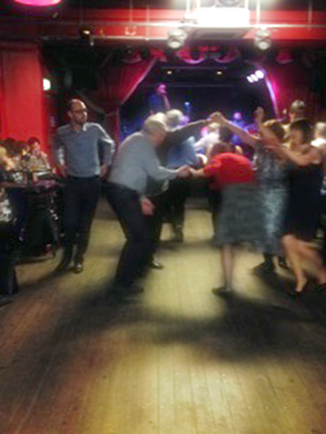

Home
Welcome to the website of the Dublin Scottish Benevolent Society of St. Andrew.
We are a group of expatriate Scots, and others with an interest in things Scottish, living in the Dublin area, who meet three or four times a year to celebrate the high points in the Scottish calendar.
The Society’s benevolent origins are still important, but our emphasis today is more on fostering fellowship among our fellow Scots and promoting an understanding of the culture of Scotland.
If what we do appeals to you, we hope you will get in touch at dublinscottishsoc@gmail.com

Addressing the Haggis - Burns Night 2009
Burns Night 2016 - The Immortal Memory proposed by Brigadier Hugh Munro (top right)
History
The Society was founded on St. Andrew's Day in 1831 "for the relief of indigent and distressed natives of Scotland in Dublin". In the early years funds were dispersed for fares back to Scotland, for burials and in weekly payments to widows and other deserving families, which continued for over a hundred years.
By this stage assisted passages back to Scotland were becoming much less frequent and the main disbursement of funds was through "annuities" or "pensions" to elderly and needy Scots in Dublin.
This, the original purpose of the Society, is still maintained and today we are paying monthly pensions and giving Christmas gifts to elderly people and making small donations to a number of charities, which over the years have included the Royal Hospital, Donnybrook, the Peter McVerry Trust, Ruhama, Aware, Focus Ireland, RNLI, Mendicity, and Médecins Sans Frontières.
The Silver Tassie


Burns' Silver Tassie, 1861 London Silver Presentation Cup with liner, designed by Italian sculptor Rafaelle Monti, and made by the London silversmith Charles F. Hancock, founder of the jewellers Hancocks who were, and are today, the makers of the Victoria Cross.
The Tassie has been in the possession of the Society since 1952 and is most recently on loan to the Irish Freemasons' Hall where it is on display. The Tassie depicts a scene from Tam O'Shanter on one side and the Cotter's Saturday night on the other. Under the handles the poems To a Mountain Daisy, To a Mouse, The Twa Dogs, and On Seeing a Wounded Hare are represented. On the inside Highland Mary is depicted and on the plinth there are words from some of these poems.
The Society Seal


Nemo me impune lacessit is the Latin motto of the Order of the Thistle. The motto also appears, in conjunction with the collar of the Order of the Thistle, in later versions of the Royal coat of arms of the Kingdom of Scotland and subsequently in the version of the Royal coat of arms of the United Kingdom used in Scotland. It is often translated as No one attacks me with impunity, or rendered in Scots as Wha daur meddle wi' me?

The President's Medal
PAST PRESIDENTS
- Alderman J Hubbard Clark - 1930/2
- A.T. McKay - 1933/6
- Wm. McMillan - 1937
- William W. Warnock - 1938/41
- John Brooks - 1942/3
- John Russell, F.C.A. - 1944/5
- James H. Cathcart - 1946
- David Stewart C.A. - 1947/8
- David H. McQuiston - 1949/50
- George Martin - 1951/2
- William Davidson - 1953/4
- David B. Ferguson - 1955/6
- G.A. Johnstone - 1957
- Lt - Col. A. J. Crozier - 1958
- F.W. Young - 1959
- Major E.L. McColl - 1961/2
- P.G. Warnock - 1963/4
- C. McQuiston - 1965/6
- M.G. Martin - 1967/8
- J. S. Anderson - 1969/70
- J.C. Doherty - 1971/2
- D. Weston - 1973/4
- R.D. Burry - 1975/6
- J.M. Inglis - 1977/8
- J.J. Mitchell - 1979/80
- M. Brodie - 1981/82
- P.G. Warnock - 1983
- P.C. Scott - 1984/5
- S. Fleming - 1986-88
- D. M. Munro - 1989-91
- John Gibson - 1992-2000
- Rev. Tom Dundas - 2001-7
- Hazel Convery - 2008-2010
- Pat McCullen - 2011-2014
- Iain Munro - 2015-

The Dublin Scottish Benevolent Society of St. Andrew in 1934
Activities & Future Events
The Bye Laws of the Society state that "the Society shall dine together on the Anniversary Day and on Burns Nicht" or the nearest convenient dates and these have become the major events of the Society's year.
A number of other social events are held throughout the year - please click the venue name for more information on the location:
Scottish Country Dance Society Annual Céilídh
Saturday 15th June 2019
St. Thomas' Church Hall, Foster's Ave, Booterstown
Film Night, with a screening of The Angels' Share
Tuesday 1st October 2019
Royal St. George Yacht Club, Dun Laoghaire
St Andrew's Night Dinner
Saturday 23rd November 2019
Royal Irish Yacht Club, Dun Laoghaire
Burns Supper
Saturday 25th January 2020
Royal St. George Yacht Club, Dun Laoghaire

 

Addressing the Haggis - Burns Night 2016, and pictures from our annual St. Valentine's Céilídh
Membership
Membership of the Society is open to Scotsmen, Scotswomen, their families and anyone with a love of Scotland and its culture.
The main objectives of the Society are:
- i - to give aid to Scottish people in need, and to make donations to charitable causes.
- ii - to create fellowship amongst Members, and to promote an understanding of Scotland and its culture.
- iii - to celebrate the anniversary of St. Andrew on or as near as possible to 30th November each year, and the life of Robert Burns on or as near as possible to 25th January each year.
Membership for the year (January to December) costs:
Couple: €25
Individual: €15
If you have any interest in finding out more about the society,or if you would like to join the society, please email us at dublinscottishsoc@gmail.com, or visit us on facebook for more photos and details of upcoming events.